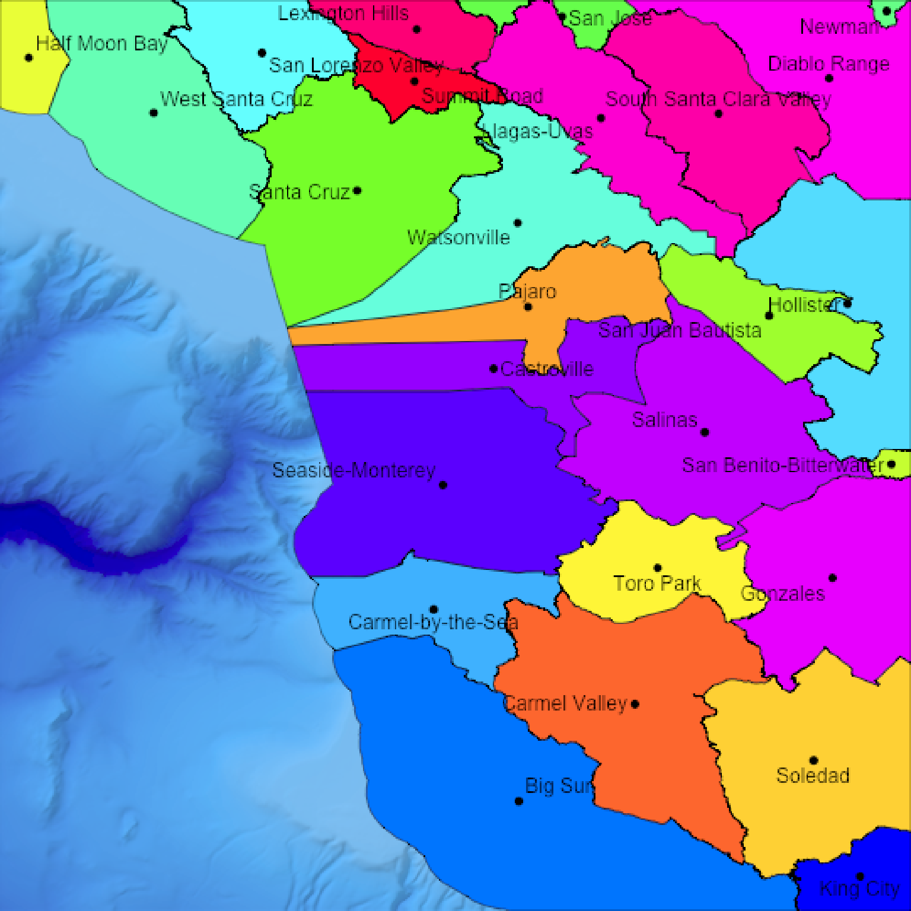
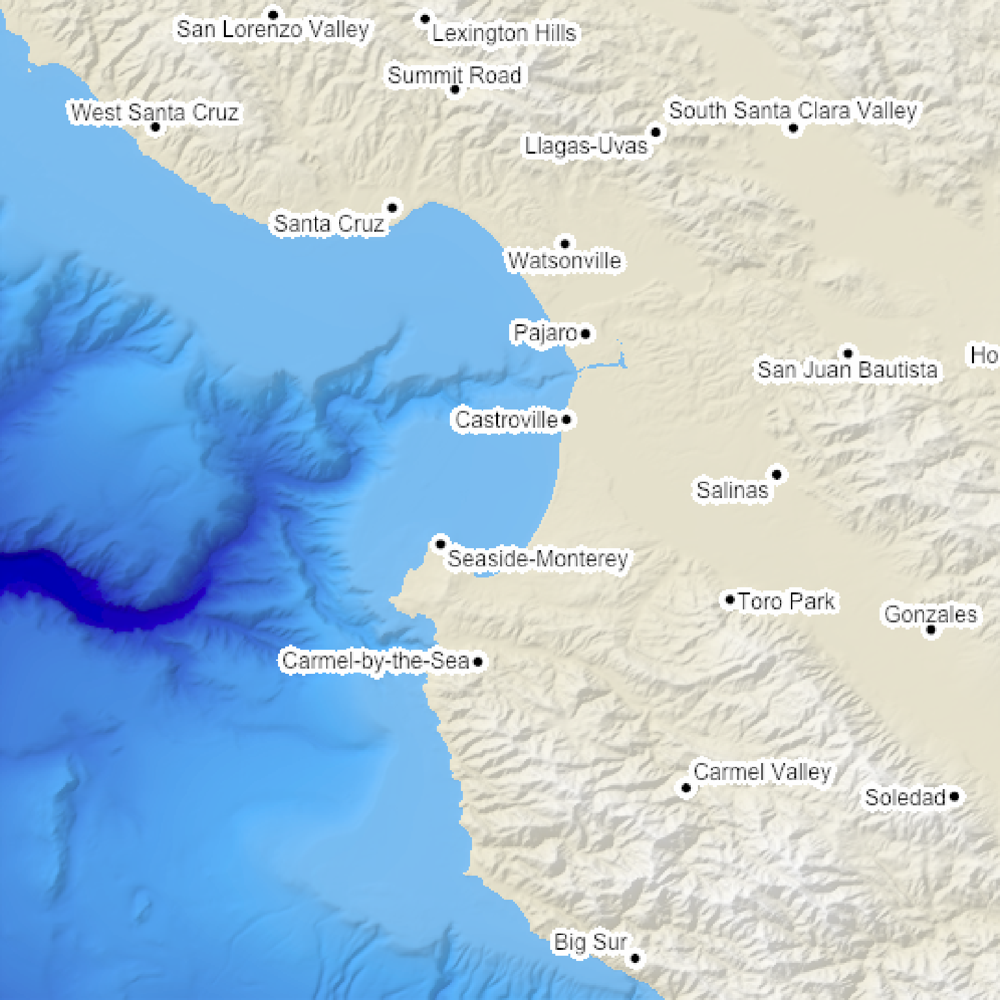
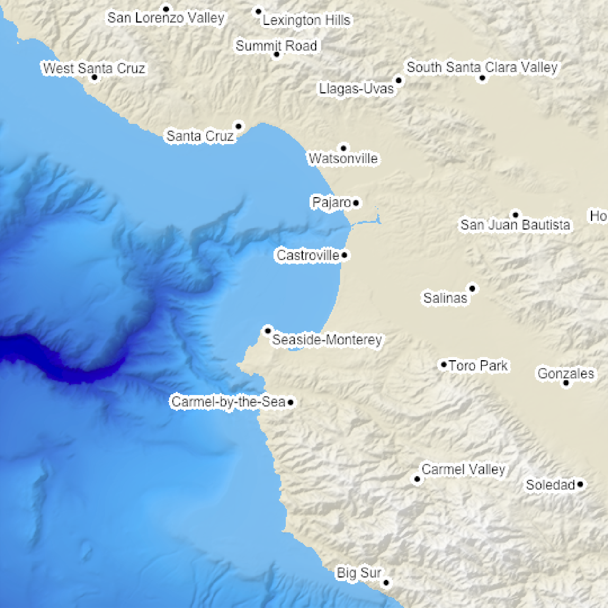

This uses the `maptools::placeLabel()` function to generate labels for the given scene. Either use an `sf` object or manually specify the x/y coordinates and label.
generate_label_overlay(
labels,
extent,
x = NULL,
y = NULL,
heightmap = NULL,
width = NA,
height = NA,
text_size = 1,
color = "black",
font = 1,
pch = 16,
point_size = 1,
point_color = NA,
offset = c(0, 0),
data_label_column = NULL,
halo_color = NA,
halo_expand = 0,
halo_alpha = 1,
halo_offset = c(0, 0),
halo_blur = 1,
seed = NA
)Arguments
- labels
A character vector of labels, or an `sf` object with `POINT` geometry and a column for labels.
- extent
A `raster::Extent` object with the bounding box for the height map used to generate the original map.
- x
Default `NULL`. The x-coordinate, if `labels` is not an `sf` object.
- y
Default `NULL`. The y-coordinate, if `labels` is not an `sf` object.
- heightmap
Default `NULL`. The original height map. Pass this in to extract the dimensions of the resulting overlay automatically.
- width
Default `NA`. Width of the resulting overlay. Default the same dimensions as height map.
- height
Default `NA`. Width of the resulting overlay. Default the same dimensions as height map.
- text_size
Default `1`. Text size.
- color
Default `black`. Color of the labels.
- font
Default `1`. An integer which specifies which font to use for text. If possible, device drivers arrange so that 1 corresponds to plain text (the default), 2 to bold face, 3 to italic and 4 to bold italic.
- pch
Default `20`, solid. Point symbol. `0` = square, `1` = circle, `2` = triangle point up, `3` = plus, `4` = cross, `5` = diamond, `6` = triangle point down, `7` = square cross, `8` = star, `9` = diamond plus, `10` = circle plus, `11` = triangles up and down, `12` = square plus, `13` = circle cross, `14` = square and triangle down, `15` = filled square, `16` = filled circle, `17` = filled triangle point-up, `18` = filled diamond, `19` = solid circle, `20` = bullet (smaller circle), `21` = filled circle blue, `22` = filled square blue, `23` = filled diamond blue, `24` = filled triangle point-up blue, `25` = filled triangle point down blue
- point_size
Default `0`, no points. Point size.
- point_color
Default `NA`. Colors of the points. Unless otherwise specified, this defaults to `color`.
- offset
Default `c(0,0)`. Horizontal and vertical offset to apply to the label, in units of `geometry`.
- data_label_column
Default `NULL`. The column in the `sf` object that contains the labels.
- halo_color
Default `NA`, no halo. If a color is specified, the text label will be surrounded by a halo of this color.
- halo_expand
Default `2`. Number of pixels to expand the halo.
- halo_alpha
Default `1`. Transparency of the halo.
- halo_offset
Default `c(0,0)`. Horizontal and vertical offset to apply to the halo, in units of `geometry`.
- halo_blur
Default `1`. Amount of blur to apply to the halo. Values greater than `30` won't result in further blurring.
- seed
Default `NA`, no seed. Random seed for ensuring the consistent placement of labels around points.
Value
Semi-transparent overlay with labels.
Examples
#Add the included `sf` object with roads to the montereybay dataset
#Only run these examples if the `magick` package is installed.
if (length(find.package("magick", quiet = TRUE)) > 0) {
# \donttest{
#Create the water palette
water_palette = colorRampPalette(c("darkblue", "dodgerblue", "lightblue"))(200)
bathy_hs = height_shade(montereybay, texture = water_palette)
#We're plotting the polygon data here for counties around Monterey Bay. We'll first
#plot the county names at the polygon centroids.
bathy_hs %>%
add_shadow(lamb_shade(montereybay,zscale=50),0.3) %>%
add_overlay(generate_polygon_overlay(monterey_counties_sf, palette = rainbow,
extent = attr(montereybay,"extent"),
heightmap = montereybay)) %>%
add_overlay(generate_label_overlay(labels=monterey_counties_sf,
color="black", point_size = 1, text_size = 1,
data_label_column = "NAME",
extent= attr(montereybay,"extent"), heightmap = montereybay,
seed=1)) %>%
plot_map()
#It's hard to read these values, so we'll add a white halo.
bathy_hs %>%
add_shadow(lamb_shade(montereybay,zscale=50),0.3) %>%
add_overlay(generate_polygon_overlay(monterey_counties_sf, palette = rainbow,
extent = attr(montereybay,"extent"),
heightmap = montereybay)) %>%
add_overlay(generate_label_overlay(labels=monterey_counties_sf,
color="black", point_size = 1, text_size = 1,
data_label_column = "NAME",
extent= attr(montereybay,"extent"), heightmap = montereybay,
halo_color = "white", halo_expand = 3,
seed=1)) %>%
plot_map()
#Plot the actual town locations, using the manual plotting interface instead of the `sf` object
montereybay %>%
height_shade() %>%
add_overlay(generate_altitude_overlay(bathy_hs, montereybay, 0, 0)) %>%
add_shadow(lamb_shade(montereybay,zscale=50),0.3) %>%
add_overlay(generate_label_overlay(labels=as.character(monterey_counties_sf$NAME),
x=as.numeric(as.character(monterey_counties_sf$INTPTLON)),
y=as.numeric(as.character(monterey_counties_sf$INTPTLAT)),
color="black", point_size = 1, text_size = 1,
extent= attr(montereybay,"extent"), heightmap = montereybay,
halo_color = "white", halo_expand = 3,
seed=1)) %>%
plot_map()
#Adding a softer blurred halo
montereybay %>%
height_shade() %>%
add_overlay(generate_altitude_overlay(bathy_hs, montereybay, 0, 0)) %>%
add_shadow(lamb_shade(montereybay,zscale=50),0.3) %>%
add_overlay(generate_label_overlay(labels=as.character(monterey_counties_sf$NAME),
x=as.numeric(as.character(monterey_counties_sf$INTPTLON)),
y=as.numeric(as.character(monterey_counties_sf$INTPTLAT)),
color="black", point_size = 1, text_size = 1,
extent= attr(montereybay,"extent"), heightmap = montereybay,
halo_color = "white", halo_expand = 3, halo_blur=10,
seed=1)) %>%
plot_map()
#Changing the seed changes the locations of the labels
montereybay %>%
height_shade() %>%
add_overlay(generate_altitude_overlay(bathy_hs, montereybay, 0, 0)) %>%
add_shadow(lamb_shade(montereybay,zscale=50),0.3) %>%
add_overlay(generate_label_overlay(labels=as.character(monterey_counties_sf$NAME),
x=as.numeric(as.character(monterey_counties_sf$INTPTLON)),
y=as.numeric(as.character(monterey_counties_sf$INTPTLAT)),
color="black", point_size = 1, text_size = 1,
extent= attr(montereybay,"extent"), heightmap = montereybay,
halo_color = "white", halo_expand = 3, halo_blur=10,
seed=2)) %>%
plot_map()
# }
}


 
